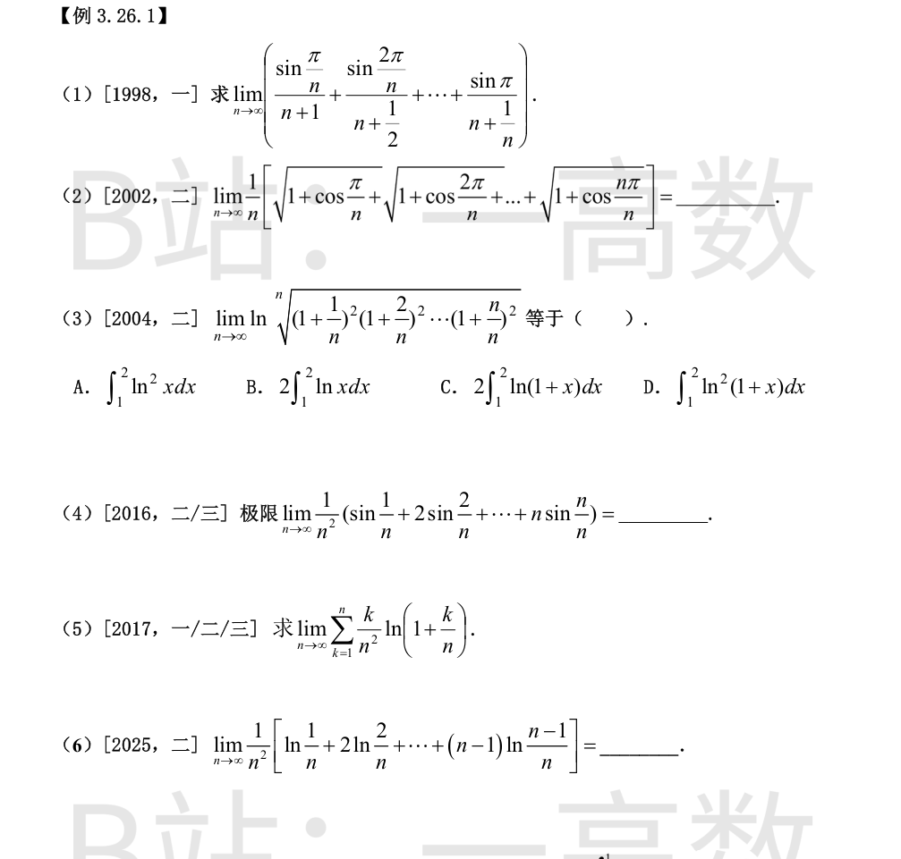
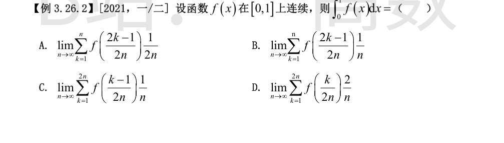

通项为 $\dfrac{\sin\frac{k\pi}{n}}{n+\frac1k}$（$k=1,\dots,n$）。由于 $n+1\le n+\frac1k\le n+\frac1n$，有
$$\frac{1}{n+1}\sum_{k=1}^{n}\sin\frac{k\pi}{n}\le S_n\le\frac{1}{n}\sum_{k=1}^{n}\sin\frac{k\pi}{n}.$$
而 $\dfrac{1}{n}\displaystyle\sum_{k=1}^{n}\sin\frac{k\pi}{n}\to\int_0^1\sin(\pi x)\,dx=\dfrac{2}{\pi}$（$\dfrac{1}{n+1}$ 与 $\dfrac1n$ 之比趋于 1，两侧极限同为 $\dfrac2\pi$）。
由夹逼准则，$\lim\limits_{n\to\infty}S_n=\dfrac{2}{\pi}$。
它是 $f(x)=\sqrt{1+\cos\pi x}$ 在 $[0,1]$ 上的右端点黎曼和：
$$\lim_{n\to\infty}\frac1n\sum_{k=1}^{n}\sqrt{1+\cos\frac{k\pi}{n}}=\int_0^1\sqrt{1+\cos\pi x}\,dx.$$
由 $1+\cos\pi x=2\cos^2\dfrac{\pi x}{2}$，且 $x\in[0,1]$ 时 $\cos\dfrac{\pi x}{2}\ge0$：
$$\int_0^1\sqrt2\cos\frac{\pi x}{2}\,dx=\sqrt2\cdot\frac{2}{\pi}\left[\sin\frac{\pi x}{2}\right]_0^1=\frac{2\sqrt2}{\pi}.$$
取对数化为和式：
$$\lim_{n\to\infty}\frac{2}{n}\sum_{k=1}^{n}\ln\left(1+\frac{k}{n}\right)=2\int_0^1\ln(1+x)\,dx.$$
换元 $u=1+x$（$x\in[0,1]\Rightarrow u\in[1,2]$）：
$$2\int_0^1\ln(1+x)dx=2\int_1^2\ln u\,du=2\int_1^2\ln x\,dx.$$
故选 B。（数值验证：$2\int_1^2\ln x\,dx=2[x\ln x-x]_1^2=4\ln2-2\approx0.773$，与 $2\int_0^1\ln(1+x)dx$ 一致；注意 C 项为 $2\int_1^2\ln(1+x)dx=2\int_2^3\ln u\,du$，不等价。）
$$\frac{1}{n^2}\sum_{k=1}^{n}k\sin\frac{k}{n}=\sum_{k=1}^{n}\frac{k}{n}\sin\frac{k}{n}\cdot\frac{1}{n}\to\int_0^1 x\sin x\,dx.$$
分部积分：
$$\int_0^1 x\sin x\,dx=\left[-x\cos x\right]_0^1+\int_0^1\cos x\,dx=-\cos1+\sin1.$$
故极限为 $\sin 1-\cos 1$。
$$\sum_{k=1}^{n}\frac{k}{n^2}\ln\left(1+\frac{k}{n}\right)=\frac1n\sum_{k=1}^{n}\frac{k}{n}\ln\left(1+\frac{k}{n}\right)\to\int_0^1 x\ln(1+x)\,dx.$$
分部积分（$u=\ln(1+x),\ dv=x\,dx$）：
$$\int_0^1 x\ln(1+x)dx=\left[\frac{x^2}{2}\ln(1+x)\right]_0^1-\frac{1}{2}\int_0^1\frac{x^2}{1+x}dx.$$
而 $\dfrac{x^2}{1+x}=\dfrac{x^2-1+1}{1+x}=x-1+\dfrac{1}{1+x}$，故
$$\int_0^1\frac{x^2}{1+x}dx=\left[\frac{x^2}{2}-x+\ln(1+x)\right]_0^1=-\frac12+\ln2.$$
于是
$$\int_0^1 x\ln(1+x)dx=\frac12\ln2-\frac12\left(-\frac12+\ln2\right)=\frac{1}{4}.$$
故所求极限为 $\dfrac14$。
$$\frac{1}{n^2}\sum_{k=1}^{n-1}k\ln\frac{k}{n}=\frac1n\sum_{k=1}^{n-1}\frac{k}{n}\ln\frac{k}{n}\to\int_0^1 x\ln x\,dx.$$
（$x\ln x$ 在 $x\to0^+$ 时趋于 0，可积；缺第 $k=n$ 项不影响极限，该项和趋于 $\int_1^1=0$ 贡献。）
分部积分：
$$\int_0^1 x\ln x\,dx=\left[\frac{x^2}{2}\ln x\right]_0^1-\int_0^1\frac{x}{2}dx=0-\frac{1}{4}=-\frac{1}{4}.$$
故所求极限为 $-\dfrac14$。

B 项：$\displaystyle\lim_{n\to\infty}\sum_{k=1}^{n}f\left(\frac{2k-1}{2n}\right)\frac{1}{n}$ 是把 $[0,1]$ 等分为 $n$ 份、取中点 $\dfrac{2k-1}{2n}$ 的黎曼和（宽度 $\dfrac1n$），由 $f$ 连续知其收敛于 $\displaystyle\int_0^1 f(x)dx$，故 B 正确。
其余各项系数不对：
A：$\dfrac{1}{2n}\displaystyle\sum_{k=1}^{n}f\left(\frac{2k-1}{2n}\right)=\frac12\cdot\frac1n\sum\to\frac12\int_0^1f(x)dx$；
C：$\dfrac{1}{n}\displaystyle\sum_{k=1}^{2n}f\left(\frac{k-1}{2n}\right)=2\cdot\frac{1}{2n}\sum\to 2\int_0^1f(x)dx$；
D：$\dfrac{2}{n}\displaystyle\sum_{k=1}^{2n}f\left(\frac{k}{2n}\right)=4\cdot\frac{1}{2n}\sum\to 4\int_0^1f(x)dx$。
故选 B。